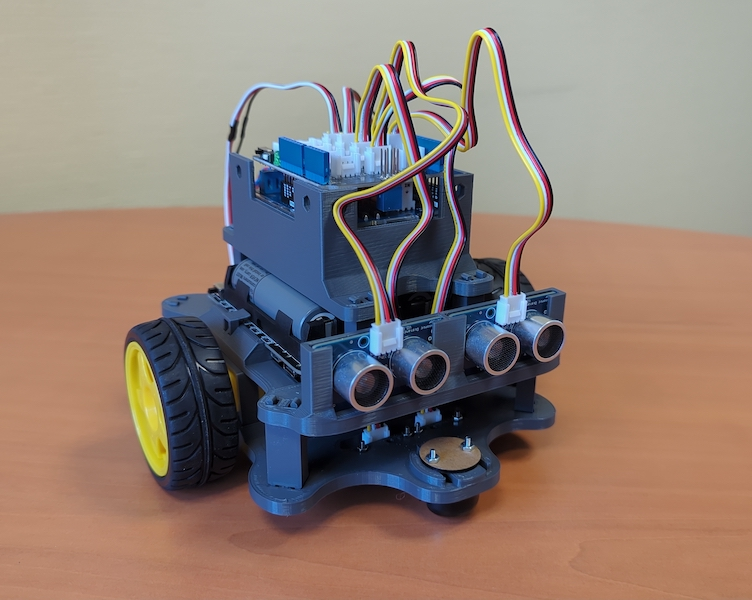

Challenge: Basic Robot Movements
In this challenge you will explore basic robot movements. Implement each movement as a function, then combine them in a program. But, before, you need to assemble the robot.

Foundation: Single Motor Driver
Write the setSpeed function that you will be using in the remainder of the challenge.
The function takes 5 parameters :
speed: a value between -255 and +255duration: Duration in millisecondsspeedPin: Motor speed pin numberdirectionPin: Motor direction pin numberbreakPin: Motor break pin number
When the speed parameter is positive, the motor rotates forward. And, when speed is negative, to motor rotates backward.
Move in a back and forth for a given duration
Write a program that makes the robot move back and forth. It should move forward in a straight line for 3 seconds. Then, the robot should move backward in straight line too for 3 seconds.
Rotate in Place
Write a program that makes the robot rotate in place. It should rotate clockwise for 3 seconds. Then, the robot should rotate counter-colockwise for 3 seconds.
Move in a Circle
Write a function circleMove that makes the robot move in a circle.
It takes 1 parameter radius which is the radius of a circle, an integer value.
Write a program that make the robot move following different circle sizes.
Move in a Spiral
Write a function spiralMove that makes the robot move following a spiral shape.
The function takes 2 parameters:
maxRadius: a positive integer that represent the maximum distance between the robot and the spiral centerspeed: an integer that represent how fast the robot moves following the spiral.- When
speedis positive, the robot starts from the center of the spiral and moves outwards. - When
speedis negative, the robots starts from the edge of the spiral and moves inwards.
- When